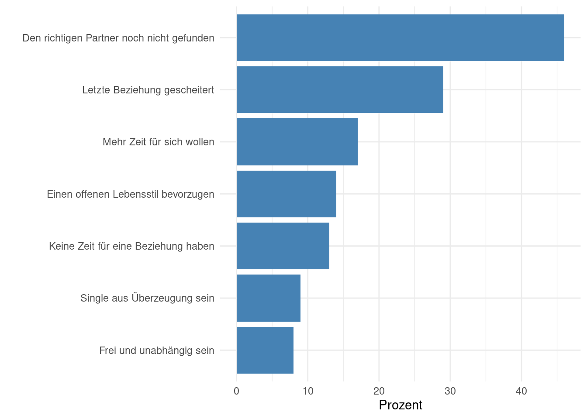

7 Single oder in einer Beziehung: Wieso?
Niveau A2 Sprachhandlung begründen Thema Beziehung/Single Grammatik weil-Nebensätze
Stehen Sie auf oder bleiben Sie sitzen.
- Wer war zum Frückstück in der Mensa?
- Wer war gestern auf dem Sportplatz?
- Wer hat sich die Haare selbst geschnitten?
- Wer hat einen Bruder oder eine Schwester?
- Wer sieht gern gruselige Horrorfilme?
- Wer sieht gern romantische Liebesfilme?
- Wer war schon einmal unglücklich verliebt?
- Wer ist im Moment Single?
- Wer ist im Moment in einer Beziehung?
Welche anderen Gründe gibt es für ein Leben als Single? Beraten Sie in der Gruppe. Nutzen Sie dabei folgende Redemittel. Notieren Sie dann Ihre Ergebnisse an der Tafel.
Ich glaube, viele Menschen sind Single, weil …
Ich denke, immer mehr junge Menschen sind solo, weil …
Ich bin Single, weil …
Für mich ist das Leben als Single attraktiv, weil …
Ich denke, die meisten jungen Menschen möchten eine Beziehung, weil …
Sehen Sie sich mit Ihrem Partner die folgende Grafik einer Umfrage aus Deutschland an. Die Frage war: Wieso sind Sie im Moment Single? Kreuzen Sie Ihre Antwort an. Was haben die Befragten geantwortet? Fassen Sie zusammen.

46% der Befragten haben gesagt, sie sind Single, weil…
Pause
Wie ist die Situation in China? Sehen Sie sich den folgenden Beitrag über Singles in China an. Wieso ist die Hauptfigur, Lan Danqing, Single? (online)
Diskutieren Sie Lan Danqings Gründe in der Gruppe. Stimmen Sie mit ihr überein? Was spricht gegen ein Dasein als Single? Wie hat sich die Einstellung zum Single-Dasein in China mit der Zeit verändert?